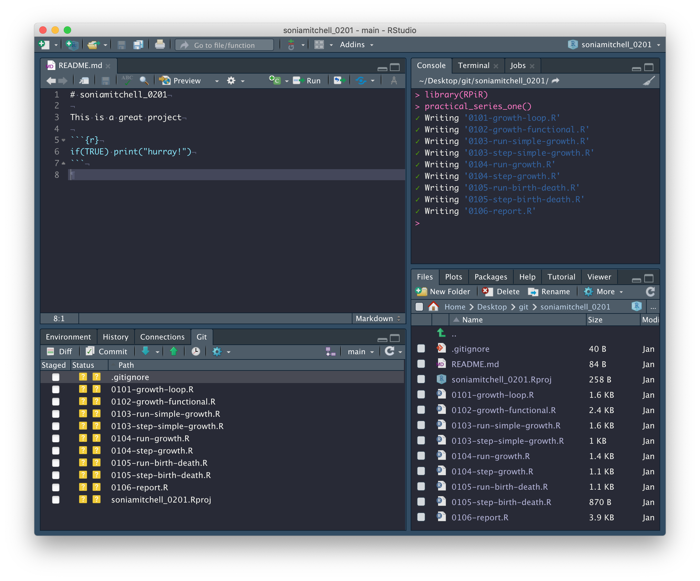
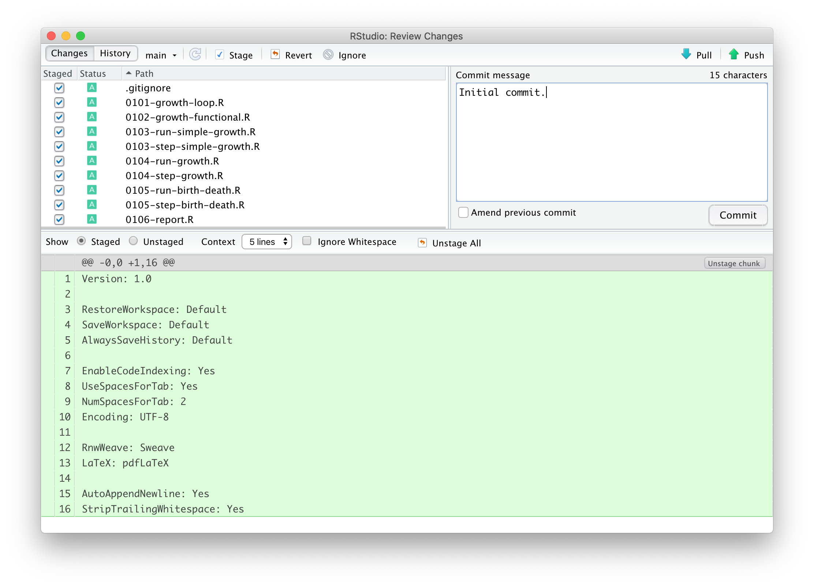
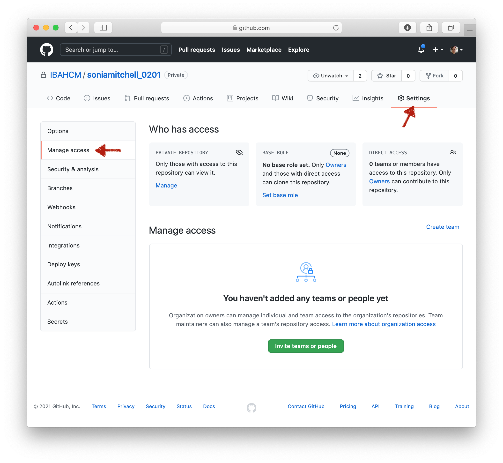
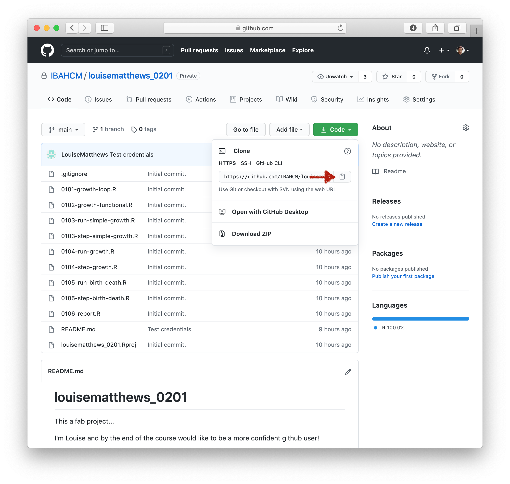

Practical 1-6: Generating a repo on GitHub and use it in RStudio
Overview
In this practical we will look at GitHub and RStudio projects as a means to organise your workflow.
Note that from here on out you will be working in RStudio. First, however, you’ll need to create a repository in the IBAHCM organisation on GitHub.
GitHub
First you’ll need to create a repository in the IBAHCM organisation on GitHub. You’ll find instructions on how to do this here. Call this repository githubusernameSeries01 (obviously use your real GitHub username!). Note that you’ll need to do this throughout this course, which is why we’ve kept these instructions separate.
RStudio
After you’ve done that, back in RStudio, create a new project linked to that repository using the instructions here. Load the RPiR package and run the practical_series_one() function. This will populate your working directory – and therefore your RStudio project and git repository – with the scripts and functions from Practical Series 1. Remember that the yellow question mark in the Status column of the Git tab means that these are not currently in your GitHub repository.

So let’s push them up to GitHub! Check the boxes next to all of the files, the scripts, the functions, and invisible .gitignore file and even the RStudio project file. Then click Commit.

Write a suitably descriptive message and Commit the files.

A new window should open with a summary of your actions, stating your commit message and telling you that 11 files changed and 513 insertions were made.

Now go to your GitHub repository. Are the files there? What did we forget to do? Don’t forget that pressing Commit isn’t enough. When you commit your files, you’re packaging them up ready to go. You still have to Push them to GitHub. Do that now and make sure they appear in your repository.

A clean start
Sometimes you can find that something you have done before in R can interfere with what you are now doing – though if you’ve written all of your code correctly, then obviously(!) this should never happen. It is useful then to know that you can clear what is held in R’s memory using rm(list = ls()). This will cause all of the variables and functions in your global environment to disappear (e.g. if you type human.annual.growth in the R console it should tell you that the object is “not found”). As a fundamental rule however:
you should never hardcode
rm(list = ls())into any of your scripts and we recommend that you never use it at all.
It’s generally a sign your code isn’t written well if it can be affected by something before it. Instead, you can clear your workspace by clicking the brush in the Environment tab in RStudio (or Session > Clear Workspace… in the menus).
However, generally it’s easier to Restart R. This is much safer and more final. You can do it in RStudio via Session > Restart R in the menus: it is far more effective than clearing just the workspace as it resets everything, while leaving RStudio itself unaffected. Remember that once you have done this you may have to set the working directory to the correct folder, and you will certainly have to start running your code again completely from the beginning.
Note that, when you generate a report from the script file, they are always generated from a new, clean, version of R. So this is a very important final check that all of your code is working correctly – it’s as if you did restart R without actually wiping everything in your current R console - but only if you read it and check it looks right!
Global variables
The other check we strongly encourage you to do is to check that your function does not use any global variables by using findGlobals().
You should also generate a report for any function files you create. If you want to, you can put the findGlobals() check into this function file (which will run the check when you generate the report for that file) so it doesn’t clutter up the main script itself. But this is only useful if you generate a report from the function file! To solve this, you can make it so the report will fail to generate for that script when global variables are used with the following code snippets:
# Now check that function doesn't have any global variables.
library(codetools)
globals <- findGlobals(step_simple_growth, merge = FALSE)$variables
if (length(globals) != 0) {
stop("Function step_simple_growth() may not use global variable(s): ", globals)
}This checks whether length(globals) is non-zero, which is to say whether the variables element of what is returned by findGlobals(step_simple_growth, merge = FALSE) is not of length zero, i.e. whether there are any global variables in the function step_simple_growth. If there are, then the contents of the curly brackets are run, stop(...) is called, and the code stops running. In fact, step_simple_growth has no global variables, so the code block is not run.
Sharing is caring
Now we’re going to try and share our work. To make it a little more interesting, edit your README.md file. Write a sentence or two about yourself and what you hope to get out of this course. Commit your changes and push them to GitHub. Then look at your GitHub repository and make sure you can see your changes.
To share your work, since you created a private (rather than a public) repository, you need to give people permission to see it. So, click on Settings, Manage access, then Add teams.

Find the IBAHCM/rpir21 team (that’s you guys) - by searching for rpir21. Make sure Read access is selected and Add IBAHCM/rpir21 to this repository.

It should look like this:

Now, exchange repository names with your group (everyone in your breakout room). You should have access if you’re part of the IBAHCM/rpir team. Now go find them. Either search through the IBAHCM organisation, or go directly to their URL. For example, if I want to find louisematthews, I’d go here https://github.com/IBAHCM/louisematthewsSeries01. Remember to take a look at their GitHub readme, you might learn something new!
Just like before, we’re going to clone this repository by clicking on the green Code button and copying the URL associated with this repository.

Then, as we did before, go back to RStudio. Go to the File menu and create a New Project…, with Version Control, using Git. The project should open automatically.
Try generating a report from one of the files.

Hopefully you should generate a report without any problems. Whether you do or not, go back to your collaborators GitHub repository and add an issue. Do this by clicking on the Issues tab and adding a New Issue.

In the issue you should describe whether or not you were successful, perhaps also including a nice encouraging message!

If you click on the Issues tab again, you’ll see a list of issues.